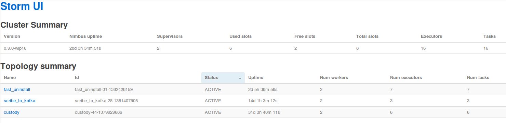
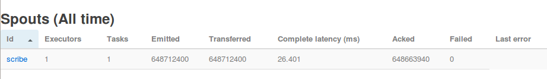
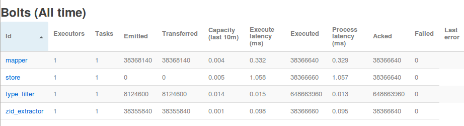
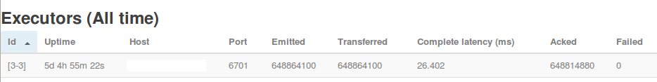
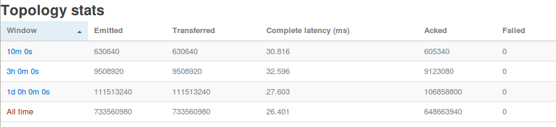

Now what?
- Learn how it works
- See an actual example
- Glimpse of Storm from Zedge
- Make you want to use Storm
The road to Storm
Batch with Hadoop
- MapReduce, Pig
- Workflow engines, i.e. oozie
The need for Storm
- Duplicated processing
- Delayed results
- Complexity in combining messages
Example
We show game catalog to user
We do not want to show installed games
We want to filter server side
A Storm Topology

Processing pipeline is called topology
Complex structures possible
Spout
A source of streams
- Message broker like Kafka
- Any stream with an open API
Bolt
A processing step
- Filter
- Aggregator
- Database connection
A real-life example
Events from Scribe
1000-2000 messages per second
Bursts of much higher load
Filtering
Interesting subset of messages
Ignore other messages
Map data to internal formats
For each game:
- Lookup internal id
- Ignore if no internal id
- Keep internal id
Synchronize data map
Lookup in CouchDB view too slow
Cache view
Refresh every 5 minutes
Store data in Redis
Multiple Redis servers
TwemProxy/Nutcracker
Jedis library with connection pool
Storm UI
ScribeSpout
Bolts
Executors
Topology
10 minute stats
Emitted: 17141360
Acked: 16501980
Events per second
Emitted: 28568
Acked: 27503
The leading mobile distribution & discovery service
Zedge (zedge.net)
Just a Data Scientist
and a team lead
but mostly a geek who's been around a while
Knut O. Hellan (@KnutHellan)
Storm
Get started at storm-project.net
Starter project
Installation instructions
Use any language supported by Thrift